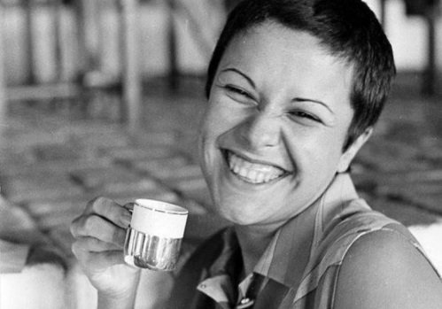

O amor não me compete, eu quero é destilar as emoções...
Elis Regina Carvalho Costa foi uma cantora brasileira. Conhecida pela competência vocal, musicalidade e presença de palco, foi aclamada tanto no Brasil quanto internacionalmente. A primeira grande artista a surgir dos festivais de música na década de 1960 e descolava-se da estética da Bossa Nova pelo uso de sua extensão vocal e de sua dramaticidade.
" Vivendo e aprendendo a jogar, nem sempre ganhado, nem sempre perdendo, mas aprendendo a jogar. "
Sua história
Durante os anos 1970, aprimorou constantemente a técnica e domínio vocal, registrando em discos de grande qualidade técnica parte do melhor da sua geração de músicos. O estilo musical interpretado ao longo da carreira percorria assim o "fino da bossa nova", firmando-se como uma das maiores referências vocais deste gênero.
Aos poucos, o estilo MPB, pautado por um hibridismo ainda mais urbano e 'popularesco' que a bossa nova, distanciando-se das raízes do jazz americano, seria mais um estilo explorado. Notabilizou-se pela uniformidade vocal, primazia técnica e uma afinação a toda prova. Seu registro vocal pode ser definido como meio-soprano.
Sempre engajada politicamente, Elis Regina criticou muitas vezes a ditadura brasileira, nos difíceis Anos de chumbo, quando muitos músicos foram perseguidos e exilados. A crítica tornava-se pública em meio às declarações ou nas canções que interpretava. A popularidade a manteve fora da prisão, mas foi obrigada pelas autoridades a cantar o Hino Nacional durante um espetáculo em um estádio, fato que despertou a ira da esquerda brasileira.
Elis participou de uma série de movimentos de renovação política e cultural brasileira, com voz ativa da campanha pela Anistia de exilados brasileiros. O despertar de uma postura artística engajada e com excelente repercussão acompanharia toda a carreira.
Outra questão importante se refere ao direito dos músicos brasileiros, polêmica que Elis encabeçou, participando de muitas reuniões em Brasília. Além disso, foi presidente da Assim, Associação de Intérpretes e de Músicos e em 1981, filiou-se ao Partido dos Trabalhadores.
Elis Regina morreu precocemente aos 36 anos, no auge da carreira, causando forte comoção no país e deixando uma vasta obra na música popular brasileira. Embora tenham havido controvérsias e contestações quanto à causa da morte, os exames comprovaram que a causa foi o consumo de cocaína associado a bebida alcoólica, que provocou uma parada cardíaca.